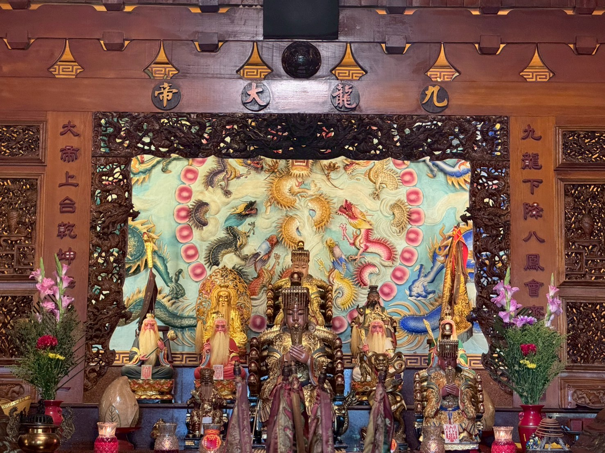
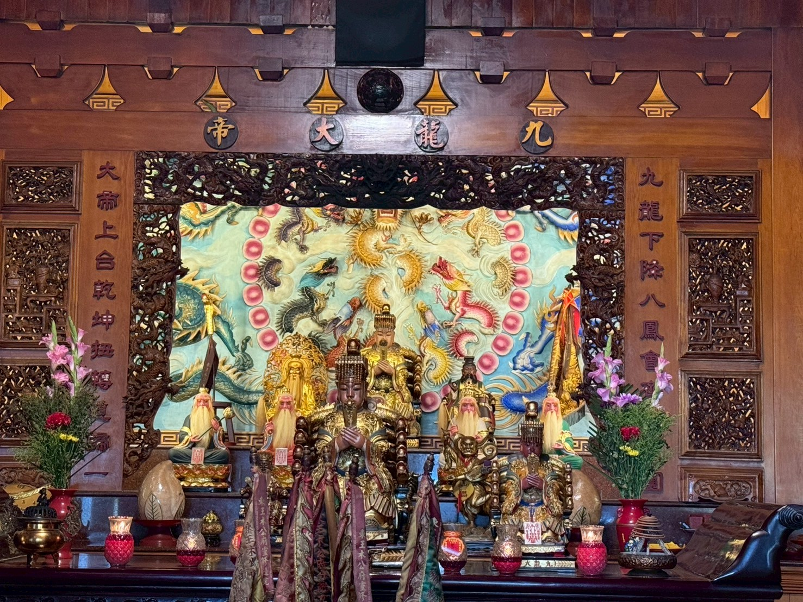
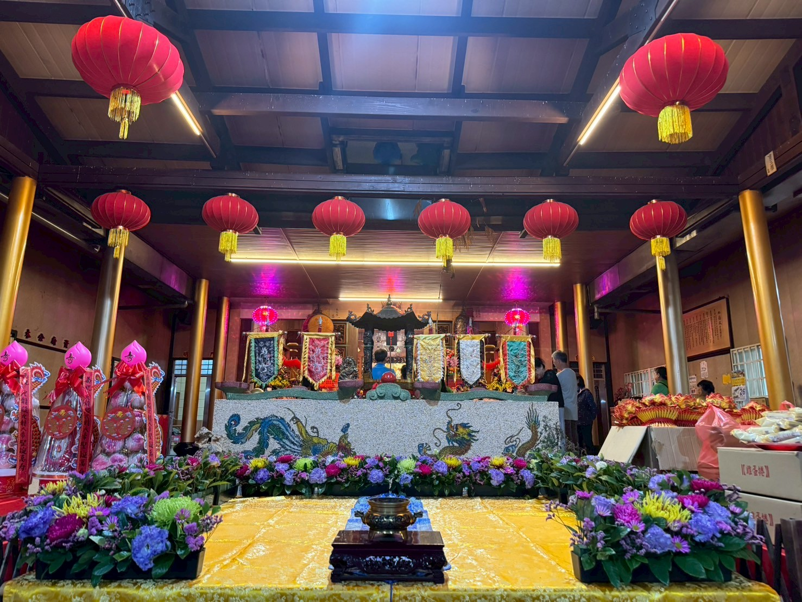
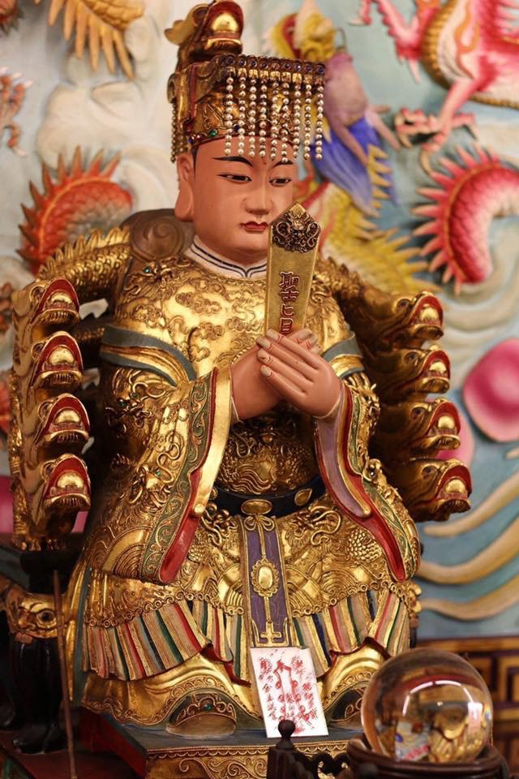

九龍殿
彰化縣埤頭鄉
主祀九龍大帝，傳承千年信仰
在靜謐中尋找心靈的平靜
主殿風采
莊嚴神聖的九龍殿內殿景觀
主殿大廳
金碧輝煌的主殿，供奉九龍大帝神像


關於九龍殿
承載著深厚的文化底蘊與虔誠的信仰傳統
九龍殿坐落於彰化縣埤頭鄉，主祀九龍大帝，是一座融合傳統建築美學與現代精神追求的神聖殿堂。這裡不僅是信眾祈福參拜的聖地，更是文化傳承與心靈淨化的場所。

主祀 九龍大帝
九龍大帝為本殿主神，護佑一方平安，信眾遍及各地
傳統文化
保存完整的宗教儀式與文化傳統
心靈寧靜
提供現代人心靈沉澱的寧靜空間
藝術美學
結合傳統工藝與現代美學設計
活動公告
最新消息與重要通知
奉祀神明
殿內供奉的各路神明護佑眾生
九龍大帝
主神
九龍大帝為本殿主神，威靈顯赫，護佑一方平安，信眾遍及各地。傳說中九龍大帝乃天界龍神轉世，擁有呼風喚雨、驅邪避災之神力，是信眾心中最為尊崇的神祇。
職司
護國佑民
神蹟
呼風喚雨
歷史沿革
歲月流轉中的信仰傳承
活動祭典
與信眾共同體驗傳統文化之美
服務項目
為信眾提供全方位的宗教服務
聯絡我們
歡迎蒞臨參訪，感受靈性之美
地址
彰化縣埤頭鄉和平路36號
開放時間
每日 06:00 - 22:00
電話
04-8920407
參拜資訊
可自由前來參拜
提供靜謐的環境修養身心靈
地圖位置